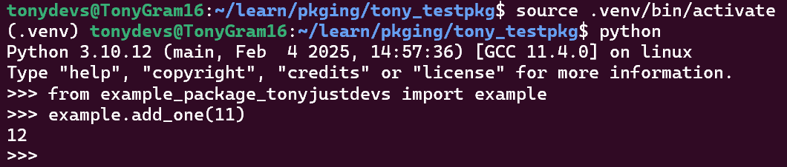

# example.py
def add_one(number):
return number + 10. Goals
Final Product - A Python Project Packaged and Distributed to PiPY (Test):
- https://test.pypi.org/project/example-package-tonyjustdevs/0.0.1/
How to package a simple Python project:
- how to add the necessary files and structure to create the package,
- how to build the package, and
- how to upload it to the Python Package Index (PyPI).
Firstly, update pip:
python3 -m pip install --upgrade pip
1. A Simple Project
Project name: example_package_YOUR_USERNAME_HERE
- If username is
me, thenexample_package_me - or
example_package_tonyjustdevs
2. File Stucture
Create the following file structure locally:
packaging_tutorial/
└── src/
└── example_package_YOUR_USERNAME_HERE/
├── __init__.py
└── example.pyor
packaging_tutorial/
└── src/
└── example_package_tonyjustdevs/
├── __init__.py
└── example.pyThe directory of files be same as the project name in toml file
Creating __init__.py:
- allows users to import directory as a regular package
example.py is a module:
- module it may contain:
- logic (functions, classes, constants, etc.) of package
3. Creating Package Files
packaging_tutorial/
├── LICENSE
├── pyproject.toml
├── README.md
├── src/
│ └── example_package_YOUR_USERNAME_HERE/
│ ├── __init__.py
│ └── example.py
└── tests/or
packaging_tutorial/
├── LICENSE
├── pyproject.toml
├── README.md
├── src/
│ └── example_package_tonyjustdevs/
│ ├── __init__.py
│ └── example.py
└── tests/4. Choosing a Build-Backend
4.1 pip & build versus build-backend
Convert sources into distribution packages:
build-backenddoespip&builddoes not
The build-backend determines:
- Project configuration specifics
- metadata (name, tags etc on PyPI)
- input files.
- Different functionalities
- Single purpose tools or multi-purple tools
- Support building extension modules or not
- Command-line interfaces
- Project Initialisation
- Version Management
- Building, Uploading & Installing packages.
4.2 Hatchling Example
[build-system]
requires = ["hatchling >= 1.26"]
build-backend = "hatchling.build"4.3 requires key is a:
List of packages that are needed to build your package:
- backend’s package,
- other build-time dependencies.
- build-time errors if dependencies ommited here
4.4 build-frontend
The build-frontend (e.g. pip, build) automatically install list of packagies when building your package, is tool run by user
Input:
- arbitrary source trees or source distributions
Builds in isolaated environments (typically):
- source distributions or wheels from them.
- actual building is delegated to each source tree’s
build-backend.
4.5 build-backend
The build-backend key is the:
- name of Python object
- frontends will use to perform the build.
Values from:
- build backend tool documentation, or
- generated by its command line interface.
- No need for Author to customize these settings.
4.6 Additional Configurations of Build Tool
toolsection ofpyproject.tomlor in a- Special file defined by the build tool.
- E.g.
setuptoolsadditional configuration added to: setup.pyorsetup.cfg file, andspecifying setuptools.build_metain your build allows the tools to locate and use these automatically.
- E.g.
5. Configuring Metadata
[project]
name = "example_package_tonyjustdevs"
version = "0.0.1"
authors = [
{ name="Tony JustDevs", email="tonyjustdevs@gmail.com" },
]
description = "A small example package"
readme = "README.md"
requires-python = ">=3.9"
classifiers = [
"Programming Language :: Python :: 3",
"Operating System :: OS Independent",
]
license = "MIT"
license-files = ["LICEN[CS]E*"]
[project.urls]
Homepage = "https://github.com/pypa/sampleproject_tonyjustdevs"
Issues = "https://github.com/pypa/sampleproject_tonyjustdevs/issues"6. Update README.md & LICENSE
7. Generating Distribution Archives
These archives are:
- uploaded to PyPI
- installed by
pip
Update build:
python3 -m pip install --upgrade build
Build command in pyproject.toml directory:
python3 -m build
Sample Files Generated:
dist/
├── example_package_YOUR_USERNAME_HERE-0.0.1-py3-none-any.whl
└── example_package_YOUR_USERNAME_HERE-0.0.1.tar.gztar.gz file is a source distribution .whl file is a built distribution.
Recommended:
- Always upload a source distribution (
tar.gz) - Provide built distributions (
.whl) for the platforms project is compatible with.
8. Upload to Distribution Archives
Upgrade or Install twine:
python3 -m pip install --upgrade twinepython3 -m pip install twine --user
Register Test PyPI:
- https://test.pypi.org/account/register/
PyPI API token:
- https://test.pypi.org/manage/account/#api-tokens
Use API token:
Create
$HOME/.pypircfile like this:[testpypi] username = __token__ password = ACTUAL_API_TOKEN_FROM_TEST_PYPI
Run twine command to upload archives under dist:
python3 -m twine upload --repository testpypi dist/*
Update their CI configuration file (e.g. .travis.yml if you are using Travis).
Upgrade twine
python3 -m pip install --upgrade twine
Run Twine to upload archives:
python3 -m twine upload --repository testpypi dist/*
9. Installing your newly uploaded package
Test Package Uploaded & Created in Test PyPI:
- https://test.pypi.org/project/example-package-tonyjustdevs/0.0.1/
Create venv and install:
python3 -m venv .venv && source .venv/bin/activatepip install -i https://test.pypi.org/simple/ --no-deps example-package-tonyjustdevs==0.0.1
or Generically:
python3 -m pip install --index-url https://test.pypi.org/simple/ --no-deps example-package-YOUR-USERNAME-HERE
10. Import Package
from example_package_tonyjustdevs import exampleexample.add_one(11)

My Python project has been packaged and distributed successfully!
11. Development Workflow
11. Dev Process
- git clone
- or pip install -e git+https://github.com/numpy/numpy.git@v1.25.0#egg=numpy
- or pip install -e git+https://github.com/owner/repo.git@branch#egg=package
- or pip install -e git+https://@github.com/owner/repo.git@branch#egg=package_name
- or pip install -e git+ssh://git@github.com/owner/repo.git@main#egg=private_pkg
- add venv
- pip install -e .
- or pip install -e “.[dev]”
- python -c “import my_package; print(my_package.__file__)”
- git commit -am “Prepare release v…”
- git tag -a v1.0.0 -m “Release v…”
- or git push origin main –tags
- or git push origin v…
- git push origin main –tags
- rm -rf dist
- [if not in backend build] pip install build twine
- [if not in backend build] python -m build
- twine upload -r testpypi dist/*
- pip install dist/my_package-v0.0.0.whl
- python -c “import my_package; print(my_package.__file__)
- pip install -e .